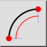
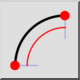
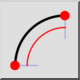
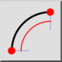

2 points et longueur
Barre d'outil / icône :
 

Menu : Dessin > Arc > 2 points et longueur
Raccourci : A, L
Commandes : arclength | al
Ceci est une traduction automatique.
Barre d'outil / icône :
 

Menu : Dessin > Arc > 2 points et longueur
Raccourci : A, L
Commandes : arclength | al
Dessine un arc en utilisant le point de départ, le point final et la longueur de l'arc.